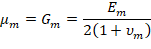
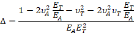
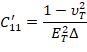
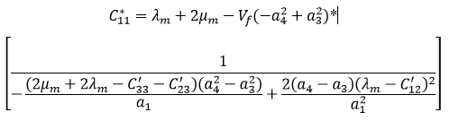
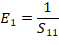

Tabla A.2.1: Datos de Entrada.
| Propiedad mecánica de elasticidad | Símbolo | Valor | Unidad |
|---|---|---|---|
| Modulo de Young longitudinal FC | EfA | GPa | |
| Modulo de Young transversal FC | EfT | GPa | |
| Relación de Poisson longitudinal FC | νfA | --- | |
| Relación de Poisson transversal FC | νfT | --- | |
| Modulo de Corte longitudinal FC | GfA | GPa | |
| Modulo de Corte transversal FC | GfT | GPa | |
| Modulo de Young de la Matriz | Em | GPa | |
| Relación de Poisson de la Matriz | νm | --- |
| Propiedad | Valor | Unidades | Expresión algebraica | Código JS |
|---|---|---|---|---|
| Módulo Longitudinal RM: E1 | MPa | \(E_1=E_fV_f+{E_m}{V}_m\) | |
|
| Módulo Transversal RM: E2 = E3 | MPa | \(E_{2}=\left[{\frac{V_{m}}{E_{m}}}+{\frac{V_{f}}{E_{f}}}\right]^{-1}\) | |
|
| Módulo de corte en el Plano RM: G12 = G13 | MPa | \(G_{12}=\left[\frac{{V}_{m}}{G_{m}}+\frac{V_{f}}{G_{f}}\right]^{-1}\) | |
|
| Módulo de corte fuera del plano RM: G23 | MPa | \(G_{23}=G_m\frac{V_{f}+\eta_{4}V_{m}}{\eta_{4}V_{m}+V_{f}\,\frac{G_{m}}{G_{f}}}\) | |
|
| Relación de Poisson en el plano RM: ν12 = ν13 | --- | \(v_{12}=v_fV_f+{v_m}{V}_m\) | |
|
| Relación de Poisson fuera del plano RM: ν23 | --- | \(\nu_{23}=\frac{E_{2}}{2G_{23}}-1\) | |
Este es un modelo desarrollado por los investigadores Barbero y Luciano. A diferencia de los anteriores modelos, predice por si solo todos los módulos correspondientes a todos los coeficientes de la matriz de rigidez Cij. Para obtener los módulos E1, E2, ν12, G12, G23 y ν23 en necesario invertir la matriz de rigidez Cij, para así obtener los coeficientes de la matriz de flexibilidad Sij. Finalmente, haciendo unas operaciones sencillas, se obtienen las constantes ingenieriles mecánicas. Los fundamentos y suposiciones hechas en el modelo se pueden encontrar en el trabajo de Barbero y Luciano (Barbero, E. J. y Luciano, 1995). Las fórmulas involucradas en los cálculos son considerablemente más complicadas que en los anteriores modelos, y se presentan a continuación.
En primer lugar, se calculan las constantes de Lamé de la matriz.La definición formal de las constantes de Lamé se pueden ver en las referencias de Lurie y Ana María Monti (A. I. Lurie, 2005; Ana María Monti, 1997):

Luego el parámetro Δ(delta):
Seguidamente un conjunto de contantes C’ relacionados con los coeficientes de la matriz rigidez:
Hasta ahora, ninguno de los valores calculados, estaba relacionado con el volumen de fibra del compuesto. Los coeficientes s3, s6 y s7 son los que varían según la fracción del volumen de fibra:

Para la siguiente parte del calculo, se trabaja con los valores obtenidos de las Ecuaciones A.2.17 a A.2.25. Los coeficientes a1, a2, a3 y a4 se calculan como:


Acto seguido, se llega a unos coeficientes C*:



Y finalmente, relaciona los coeficientes C* con las constantes de la matriz rigidez Cij:

Invirtiendo la matriz rigidez Cij se obtiene la matriz flexibilidad Sij y finalmente se obtienen las constantes ingenieriles:
